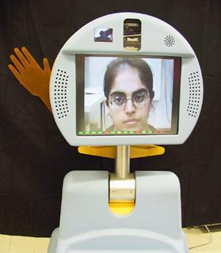
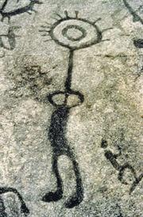
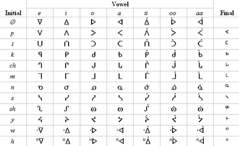
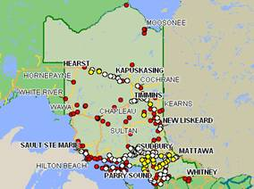
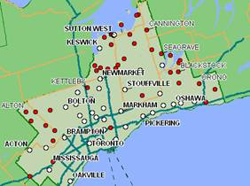
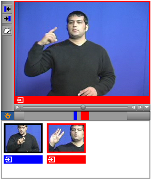
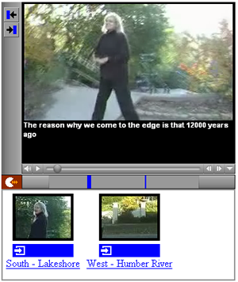

Intersections: On-line Barriers to Oral Cultures and Parallels with Accessibility Barriers
Version 1.0, Mar. 22, 2007
Authors: Jan Richards1, Ron Berti2, and Christopher Wemigwans2
Contributors: Catherine Gull2, Heidi Hazelton1, Francis (Cotnee) Kaboni3, Sunny Osawabine2, Joe Osawabine2, Wendy Porch1, Elisha Sidlar2
1 Adaptive Technology Resource Centre
University of Toronto
Toronto, Ontario, Canada
2 Debajehmujig Theatre Group
Wikwemikong, Ontario, Canada
3 Wikwemikong, Ontario, Canada
Table of Contents
- Preface
- Intended Audience
- Introduction
- Notes on Recording Technology
- Part A: Cultural Barriers
- Part B: Writing System Barriers
- Part C: Other Barriers to Practical Implementation
- Conclusion
- Glossary
- Other Sources of Information
- Examples of Oral Culture Online
- Notes and References
Preface:
This document originated as a dialogue on the similarities between barriers faced by members of oral cultures and those faced by people with disabilities or who are Deaf1 that took place in 2005-2006, between members of Debajehmujig and the Adaptive Technology Resource Centre. Since many of the examples in this document are drawn from the personal experience of members of the theatre troupe, which is based in an Ojibway community on Manitoulin Island, the examples often make reference to Ojibway culture. However, because practices within Ojibway culture vary somewhat from region to region and community to community, we will use the phrase "some Ojibway communities" for clarity.
Overall, the discussions were productive and some of the potential solutions were successfully tested as part of the development of a real-world site for people in an oral culture, the Debajehmujig online "Brochure for Language Speakers ". On the other hand, while the results of the discussions may be suggestive of more universal phenomena, we do not intend this document to be normative or prescriptive. Instead, we see the potential solutions as suggestions.
Debajehmujig is the longest running Native theatre in North America. The group has Ojibway roots and is based in the town of Wikwemikong, Ontario (on Manitoulin Island). They have performed in many parts of Canada, the U.S. and in Europe.
The Adaptive Technology Resource Centre (ATRC), of the University of Toronto is an internationally recognized centre of expertise on barrier-free access to information and education through technology. The ATRC promotes access to information for people with disabilities through leading-edge research, development, education and direct service to clients of all ages. The staff includes leaders in the field of multi-modal display, alternative control and access to network delivered education. Located at Canada’s leading research University, the ATRC draws from innovative initiatives across the institution. Members of the ATRC lead work in accessibility in a number of international standards and specifications bodies including the W3C, IMS, Dublin Core and IEEE.
Intended Audience
We suggest this document may be useful to the following groups:
- Developers of websites intended to represent oral cultural content (e.g. websites that include storytelling, traditional histories, medicinal knowledge, etc.)
- Elders and other holders of oral knowledge.
- Web design instructors and students, especially in oral cultural communities
- Community, government and industry officials involved with bringing Internet connectivity into oral cultural communities
- People with disabilities or who are Deaf who may be interested in the parallels with accessibility
- Anyone seeking an understanding of the issues surrounding attempts to bring oral knowledge online
Introduction
"The oral tradition specializes at drawing human beings together on an interpersonal level, where concepts often times penetrate the soul more deeply than via script."2
Oral cultures are those in which great importance is placed on the verbal passage of knowledge, whether history, teachings, literature or laws, so that a uniquely human connection is maintained. These cultures may make use of a writing system to a greater or lesser degree, but usually with a clear emphasis on which knowledge should continue to be passed orally.
The long progression of communication technologies has simultaneously presented oral cultures with both opportunities and barriers. On one hand, the technologies enable people to communicate with one another across great physical distances, through time (via record-keeping), and to a larger audience (via broadcasting). But on the other hand, these technologies often tend to depersonalize the once very personal act of communication. This is especially obvious with writing-based technologies (e.g. printing, teletype, electronic text), which some see as unable to convey the rhythm and life that is inherent in human speech. But, some degree of depersonalization also occurs with speaking-based technologies. For example, although people speaking by telephone or audio conference can hear each other, they are not able to see each other's body language, surroundings, etc. all of which are important to a fully communicative experience. Radio and television broadcasts are even less personal, since the communication is only one-way.
The advent of the World Wide Web has continued the mixed blessing of technologically-mediated communication. On the positive side, the Web supports some forms of communication that are somewhat more personal, such as video conferencing, in which speakers can see and hear each other. And the Web allows private individuals to "broadcast" to potentially large audiences in a way that previously was only available to radio or television media organizations.
However, on the downside, the Web does not fully overcome the barriers of depersonalization even the richest video conferencing tools and, more often than not, the writing-centric origins of the Web are very evident, especially when the amount of on-screen text is compared to that on television. The Web also suffers from additional, practical, barriers such as the availability and compatibility of software and Internet connectivity that must be contended with. These factors have left many members of oral cultures on the "have not" side3 of the digital divide.
It makes sense, then, to consider the parallels, and the differences, between people in oral cultures and people in two other groups that have often grappled with the digital divide, people with disabilities and people who are Deaf1.
Part of the problem for people in all three groups may be the fact that the development of online tools is generally driven by the requirements of developers who typically young, non-disabled, and print literate. Since people tend to design with themselves in mind, the needs of many other people are simply not considered.
This document explores the barriers to the effective use of the online environments that are experienced by people who live within oral cultures and suggests similarities between these barriers and those faced online by people with disabilities and people who are Deaf. For each barrier, this document provides:
- (a) Discussion of Barrier for Oral Cultures: An explanation of the nature and impact of the barrier. Additional related information may also be provided.
- (b) Intersection with Accessibility4 Barriers: A comparison of the oral cultural barrier to any similar barriers that may be faced by various groups of people with disabilities or people who are Deaf. If accessibility solutions exist to overcome these barriers, they will be described.
- (c) Potential Solutions for Oral Cultures: A discussion of the strategies available for overcoming the barrier in oral cultural contexts. In some cases, the solution may be related to those already discussed in the "(b) Intersection with Accessibility Barriers" section.
The barriers are organized into three parts. Part A looks at the complex cultural barriers that come with representing culturally significant or protected knowledge online. Part B discusses writing system barriers. Part C includes additional barriers to practical implementation.
Notes on Recording Technology
In general, the use of any recording technology for culturally significant oral knowledge requires careful consideration for the following reasons:
- Any recording has the potential to be redistributed in ways that the original distributor might not have intended. For example, an audio recording of some oral knowledge might eventually be transcribed despite the original author having objections to this. It would also be possible for a message to be used in a third-party fictional work or be cast in a disparaging light. However, it should be noted that any holder of oral knowledge has the potential to break traditions of proper usage, so trust is always a factor.
- Should the information be placed on a web site, even with a secure login, unauthorized distribution is possible, for example if login information is stolen or if an authorized individual abuses their access privileges.
- Copyright protection is likely to be ineffective against determined re-distributors.
Even apart from these considerations regarding misuse, there are other factors to take into account when deciding whether to record oral knowledge and make it available online.
- Storytelling is an art in which the storyteller often adapts stories in quality and emphasis depending on the listener and the context. Because recorded stories are necessarily removed from the context, they can be viewed as stagnant and inauthentic.
- Another consideration is the strong localization of some stories. The subject matter and meaningful detail of these stories might, for example, rely heavily on local flora and fauna in such a way that people outside the local area may have difficulty understanding the story's meaning.
Part A: Cultural Barriers
A.1. Traditional values may discourage technological communication of oral knowledge.
(a) Discussion of Barrier for Oral Cultures:
In many oral cultures, great importance is placed on continuing the tradition of passing certain types of knowledge, what we will refer to as oral knowledge, orally and in-person. What constitutes oral knowledge and how oral knowledge can be passed is decided differently depending on the culture in question, but often includes traditional teachings or ceremonial customs.
For example, in some Ojibway communities, a consensus among of elders would determine which knowledge should remain oral and to what extent particular oral knowledge might be passed on in non-traditional ways. In most situations, oral knowledge may not be written down, since "living" the knowledge helps to ensure that the knowledge is truly absorbed, rather than simply being written down and potentially forgotten. This prohibition would also apply to placing the oral knowledge on a text-based web page. On the other hand, the elders may allow some exceptions to be made for communication by phone, especially if a community member was not able to travel to meet in-person with the knowledge-holder.
This section concerns knowledge that has only the restriction that it must be passed orally. If there are additional restrictions (e.g. gender rules) on passing the knowledge, please also see section A.2.
(b) Intersection with Accessibility Barriers:
While "mainstream" Canadian culture generally embraces a wide variety of technological communication media for most topics that might be communicated, there remain a variety of contexts in which in-person exchange is still expected or was until fairly recently. Examples include classrooms (especially primary and secondary school classrooms), job interviews, and banking. This requirement for face-to-face contact has presented a barrier to people who have disabilities that reduce their ability to meet others in-person. These disabilities might include conditions that require extended hospital stays, mobility impairments (e.g. paralysis, blindness) that necessitate special travel arrangements, and certain mental health conditions that make meeting people very stressful.
With the advent of the Internet, this situation has improved somewhat because: online environments are able to support richer interaction than the predominant 2-way communication systems of the past, such as the telephone and postal mail, and because "mainstream" Canadian society is becoming more accepting of less in-person contact in many situations where it had previously been required.
 |
Fig. 1: Pebbles robot (Source: Centre for Learning Technologies) |
An example of the richer communication offered online is the "Pebbles" system (Fig. 1) that lets hospitalized children participate in regular classroom settings via Internet-based audio-video teleconferencing. The children are able to easily see and speak to each other and the hospitalized child has a controller that allows them to point the camera in different directions. In order to increase the "in-person" feeling of the system, the "classroom" terminal is constructed as a somewhat child-sized robot with a waving hand5.
An example of the way that "mainstream" Canadian society in general is becoming more accepting of less in-person interaction is the proliferation of e-government, e-learning and e-banking applications. These have been made possible by the higher level of trust that secure login features bring to online environments.
(c) Potential Solutions for Oral Cultures:
It is important to emphasize that the holders of oral knowledge should have the last word on whether or not their knowledge should be represented, stored and communicated online. These decisions should be respected.
- Do not place the oral knowledge online: If the holders of oral knowledge do not agree to place that knowledge online, then their wishes should be respected.
- Off-Line Resource (see Off-Line Resource): In some cases, the holders of the oral knowledge might agree to make the knowledge available as an off-line resource that can be somewhat better controlled.
On the other hand, if the knowledge holders do agree to place oral knowledge online, some technologies are better than others at maintaining the human connection:
- Audio Conference (see Audio Conference in Glossary): Online audio conferences, in which both parties hear each other, are in practice quite similar to telephone conversations and so share the same degree of personal connection.
- Video Conference (see Video Conference in Glossary): Online video conferences, in which both parties see and hear each other, actually provide a stronger personal connection than the telephone or audio conferences, but still significantly less than in-person.
Other online technologies can maintain the auditory nature of oral knowledge, but not the direct personal connection.
- Audio Files (see Audio Files in Glossary): Audio files maintain the oral nature of the message, but not the personal connection of audio conferences.
- Video Files with Sound (see Video Files with Sound in Glossary): Video files with sound maintain the oral nature of the message, but not the personal connection of video conferences.
- "Storylinking" (see "Storylinking" in Glossary): Allows the entire web browsing experience to be speech based, not just the video content.
A.2. Access to certain types of oral knowledge may be restricted.
(a) Discussion of Barrier for Oral Cultures:
Many cultures include concepts of permission on certain kinds of oral knowledge. Sometimes the permission criteria are factors that may change over a person’s lifetime (e.g. the person's age or their level of initiation into a group), while in other cases it is something more intrinsic (e.g. gender-specific knowledge, whether someone has been born into a group). In other cases, tradition stipulates other factors, such as the time of year (e.g. during a season or festival), as being important considerations for how and when knowledge can be transferred. For example, in some Ojibway communities, winter is the traditional storytelling season.
Furthermore, some cultures hold that conveying or using some types of information is simply not acceptable. For example, Australian aboriginal culture holds that the names or images of deceased people are offensive and should not be depicted.
(b) Intersection with Accessibility Barriers:
Not applicable.
(c) Potential Solutions for Oral Cultures:
When access to some particular oral knowledge is permitted only under certain conditions, the following potential solutions are available:
- Do not place the restricted oral knowledge online: If the material is extremely sensitive, then it may be best not to place it online at all.
- Off-Line Resource (see Off-Line Resource): In some cases, the holders of the oral knowledge might agree to make the knowledge available as an off-line resource that can be somewhat better controlled. For example, recordings might be held in a library where they might only be viewable with a librarian present.
-
Mnemonics: Instead of placing the actual oral knowledge online, mnemonic "hints" can be placed in online settings to help remind people who already have the oral knowledge of what they already know, thereby allowing the knowledge to "hide in plain sight". For example, colours, shapes, etc. that are meaningful elements of a teaching can be presented in disguised contexts. It is believed for example, that ancient stone carvings called petroglyphs (Fig. 2) acted as mnemonics for knowledge that people could not more explicitly represent.
Fig. 2: Peterborough Petroglyphs (Source: Wikipedia)
- Secure login (see Secure Login in Glossary)
- Notification of stringent copyright enforcement: For information that is less sensitive, yet nonetheless important to a community, strongly worded copyright notices can be used to help ensure that stories, etc. are not taken for other uses. One technique would be to require the user to click a button to confirm their agreement with the copyright policy before viewing content.
Where a substantial proportion of members of a particular culture are likely to find material sensitive or offensive, there are several options:
- Do not include the information: Simply leave the offensive material off the site.
- Secure login (see Secure Login in Glossary): Require a login to view the materials.
- Employ warnings: If there is a compelling reason to include the material despite the potential distress it may cause, then one common strategy is to include warnings that a person must acknowledge before continuing. Of course, people may still be offended simply by the idea that this information is included or may accidentally view the material regardless (e.g. if they make an accidental action or are unable to understand the warning).
A.3. Graphics have cultural significance and may cause confusion.
(a) Discussion of Barrier for Oral Cultures:
One of the primary features of the graphical user interfaces (GUI's) used by most modern operating systems (e.g. Windows, MacOS, Gnome) is the heavy use of graphical icons as objects of interaction for the user (Fig. 3).
Icons can be very helpful when designed to leverage appropriate metaphors of use (e.g. picture of a printer for printing icon). But, if insufficient thought is given to the icons, especially in cross-cultural contexts, the result can be confusing (e.g. "recycle bins" in locales where recycling programs do not exist) or even insulting (e.g. it is impolite to point with the index finger in the Middle and Far East)6.
From an oral cultural perspective it is problematic to have icons that include text (e.g. the "ABC" icon in Fig. 3 – position: 2 nd row, 3 rd column) or other literacy-related symbols (e.g. the books icon in Fig. 3 – position: 2nd row, 4th column) since these metaphors are less meaningful.
(b) Intersection with Accessibility Barriers:
In Deaf culture, books do not have as central a cultural role as they do in mainstream Canadian culture. So, although Deaf computer users will probably know the association between a "book" icon and accessing the help system, this association is not particularly culturally appropriate. When the Signlink Studio authoring tool was designed to automate the production of "Signlinking" webpages, this was identified as an issue and a more culturally-sensitive icon was chosen: the ASL sign for "help" (Fig. 4). Of course, since the sign for "help" will be different in other sign languages, this is not a universal solution.
People with colour-blindness are unable to properly differentiate colours; the most common form of colour-blindness inhibits differentiation between red and green. This means that some people will have trouble making use of icons in which colour is the sole means for differentiating between two icons or is important to understanding the design of an icon. For example, a person with red-green colour blindness would have difficulty distinguishing between the green and red light bulb icons shown in Fig. 5.
(c) Potential Solutions for Oral Cultures:
The following strategies should be employed to improve the design of navigational and other icons for websites:
- Research: Prior to beginning a project whose audience is intended to be the members of a specific culture, the values, traditions and prohibitions of the culture should be well understood.
- Community Consultation: It would be best practice to ensure that community consultation continues throughout all stages of a project and that the design of graphics receives specific attention. If community members experience difficulty with any proposed designs, new designs should be worked out in further consultation.
Part B: Writing System Barriers
B.1. A community may not have access to a writing system.
(a) Discussion of Barrier for Oral Cultures:
Up to the 20th century many spoken languages did not have writing systems. This is generally no longer the case as writing systems have tended to be introduced for these languages, either by people within the language community who had experience with a different language's writing system, as happened for the Cherokee language, or by outside educators or researchers. As a result, online communication in a given language is not usually prevented by the complete absence of a writing system. Instead, there are many cases in which, even though a writing system does in fact exist, it is not in common usage by the members of a particular community. This usually occurs because of the critical role of formal education in the learning of writing systems. Unlike spoken language that is acquired less formally before school begins, writing systems are usually taught during primary schooling. If, for whatever reason, the members of a community attend schools that do not teach a writing system, they will be less likely to learn it later.
Fig. 6: Instructor in a residential school teaching English (Source: cbc.ca) |
This is the case in many Canadian aboriginal communities. The older generation learned their community's spoken language (e.g. Ojibway) as children at home. But they did not usually properly learn a writing system. The major reason for this was that until the 1970's, and in some place into the mid-1980’s, aboriginal children were often removed from their families when they reached school-age and placed in government-run residential schools (Fig. 6). Since the residential schools were run with the goal of cultural assimilation, in most cases only spoken and written English and/or French were taught, while the aboriginal writing systems (where they existed) were not taught and use of aboriginal spoken languages was generally suppressed.
In order to correct this situation, aboriginal language writing systems are now being taught to the younger generations in school. While this is a positive development, older members of many communities often remain without a written first language.
(b) Intersection with Accessibility Barriers:
Fig. 7: Image of ASL equivalent of "about" in SignWriting (Source: signwriting.org) |
Sign languages (e.g. American Sign Language – ASL and Langue du Signes Quebecoise – LSQ) are gestural communication systems used within many Deaf communities. It is generally agreed that most sign languages are languages on par with spoken languages in terms of syntactical and grammatical completeness and also largely independent7 of whichever spoken language happens to be in use by the hearing population in the area. For example, although ASL signers generally live in parts of North America where English is the dominant spoken and written language, ASL is grammatically and conceptually different from English. For this reason, written English cannot serve as the writing system for ASL. While efforts to devise writing systems for sign languages have been made (e.g. Stokoe8, HamNoSys9 and SignWriting10 (Fig. 7)), these have not achieved very much popularity within Deaf communities. As a result, text-based sign language webpages that would be understood by most community members are not yet feasible.
The most popular approach on the Web to overcoming the lack of a sign language writing system has been to create websites that include videos of signers along with text-based navigation or supplemental information in another language (e.g. English11). While this solution works for deaf people who are able to read the second language, it does not provide an immersive sign language-based Deaf cultural experience.
With this in mind, a novel multimedia technique was developed several years ago, called Signlinking. Signlinking allows webpages to be created in sign language without the need for any additional second language text content. The technique embeds a video within a page and places hyperlinks within video to let the user navigate to other web resources on the basis of the signed utterances in the video. This allows members of Deaf communities to create and view websites in their own sign languages without any textual content in other languages required.
Somewhat surprisingly, an increasing number of people who are blind face a related barrier. In this case the cause is not a language without a writing system, since people who are blind speak the same language as the mainstream community. Instead, the reason is steady downward trend in the use of Braille12, a one-to-one transcription of the Latin alphabet using tactile symbols made of embossed dots, which for over a hundred years had been the predominant method by which people who are blind independently accessed written material. Braille played an important role in print literacy because, Braille can be produced easily with a "slate and stylus" or manual Braille typewriter and it can be interacted with directly at the level of the characters that make up words.
Fig. 8: Refreshible Braille display (Source: Wikipedia) |
However, Braille literacy has declined due to the increasing popularity of books on tape, text-to-speech technology (which is much cheaper than refreshible Braille displays – computer peripherals that display on-screen text as Braille using hundreds of retractable plastic pins (Fig. 8 )), and integrated classrooms in which teachers are not necessarily able to teach Braille. As a consequence, the ability to read and write English has dropped among people who are blind, in effect creating a new oral culture. While these individuals can access online content by using text-to-speech technology, their ability to contribute Web content is limited by their less developed writing skills. For these individuals, the ability to produce online audio files might provide a way to create Web content without requiring strong reading and writing skills13.
(c) Potential Solutions for Oral Cultures:
When a widely-used writing system is not available to the members of an oral culture, the natural alternative to text-based webpages is audio-enabled multimedia, such as:
- Audio Files (see Audio Files in the Glossary)
- Video Files with Sound (see Video Files with Sound in the Glossary)
- "Storylinking" (see "Storylinking" in the Glossary)
However, it may also be possible to communicate certain types of information without any language at all:
- Greater use of pictures and diagrams: Replacing text by pictures or diagrams may be a workable solution in cases where the message being delivered is relatively simple. For example, a map may be able to replace written/spoken directions. However, for more complex material, such as stories with dialogue, pictures may not be sufficient.
In some situations, the author of the materials may be able to make use of a writing system while the audience members cannot. In such cases, Text-to-Speech may be useful:
- Text-to-Speech (see Text-to-Speech in the Glossary): The great benefit of client-side text-to-speech over recorded speech is the much smaller bandwidth required in order to transmit the electronic text to the text-to-speech engine versus sending the recorded audio file. An important drawback, however, is that the synthesized voices do not provide the same degree of affect. Also, text-to-speech systems are not available for all languages, especially those with relatively small numbers of speakers.
B.2. A writing system may not have an electronic text representation.
(a) Discussion of Barrier for Oral Cultures:
While the characters that make up a writing system can be represented by computer software either as electronic text or as graphical images of text, the use of electronic text is far superior to the alternative, because image-encoded text:
- is difficult to compose: Usually image-encoded characters cannot be simply typed in as electronic text characters can.
- is difficult to manipulate: Unlike electronic text, images of text cannot be easily copied, re-coloured, re-sized, or given a new font.
- has higher memory requirements: Electronic text characters are represented by codes, each taking only a few bytes. In contrast, images of text can easily take thousands of times more memory (i.e. kilobytes), with the exact amount depending on the size and font of the text and the graphics format used.
In electronic text, a character encoding scheme allows software, such as Web browsers, to translate character codes into rendered characters on the screen. In the past, the encoding standards have tended to be Latin-centric, but a new industry standard, Unicode, is gaining popularity and is capable of specifying many more character sets. Unicode character encodings have been created for most of the world’s widely-used languages, enabling an incredible cultural and linguistic online diversity. In fact, although many people in think of the Web as predominantly English, less than 30% of Web users are now English speakers14 and Asian users already out-number North American ones almost two-to-one15.
However, that said, not all writing systems have Unicode encodings (e.g. Pahawh Hmong16, a Laotian language for which a writing system was developed in 195917).
 |
Fig. 9: An example of Canadian aboriginal syllabics (Source: wikipedia.org) |
The lack of electronic representation is not a problem for Ojibway as there are actually several writing systems in use and they each have electronic representations. The two most popular writing systems are:
- Canadian aboriginal language syllabics (Fig. 9 ). These syllabics are already represented in the Unicode standard18. However, because syllabics were introduced by missionaries rather than being developed within the language community there is a difference of opinion regarding the real popularity of this system.
- Fiero’s double vowel writing system for Ojibway (Fig. 12). This system is gaining popularity among language teachers uses the Latin alphabet to encode the Ojibway speech sounds.
(b) Intersection with Accessibility Barriers:
The SignWriting system of transcribing sign language content (Fig. 7) has reserved space within the Unicode code-table. However, as of 2006 a proposal has not yet been submitted for approval19. As a result, it is not yet possible to create SignWriting documents for the Web using electronic text. Instead, SignWriting documents must be created using images of the SignWriting characters, a time-consuming task that is made only somewhat easier by the availability of an automated conversion utility20.
(c) Potential Solutions for Oral Cultures:
The following strategies may be employed when there is no electronic representation for a writing system:
-
Images of text: In the short-term it is possible for languages without electronic text representations to establish a presence online in the same way that SignWriting does, by displaying written content as images of text (Fig. 10). However, this approach has severe drawbacks (see above), so in the long-term it is preferable to have an electronic representation since that allows the language to be more easily used by its speakers, especially in areas where computers and the Internet play an important role, such as education and business.Fig. 10: Image of text of Pahawh Hmong (Source: omniglot.com)
(a) يا صباح الخير ... يا ألف نهارأبيض (b) 9aba7 el kheir...Ya alf nhar abya'9 |
Fig. 11: (a) An Arabic message and (b) the same Arabic message transliterated in the Latin alphabet. (Source: baheyeldin.com) |
- Transliteration: Transliteration is a practice in which characters from one writing system are used to represent the characters from another. The impetus behind this has often been the availability of a new writing technology for the other writing system (e.g. printing, teletype, mobile text messaging devices, electronic text representation, etc.). One recent example of transliteration is the popular use by Arabic speakers of Latin alphabet characters to represent Arabic for cell phone text messaging and email (Fig. 11). In effect, the Arabic speakers have devised a new writing system for their language, using the Latin character set, which is better supported than the Arabic set by today’s electronic devices.
a aa b ch d e g ' h i ii j k m n (nh) ny o oo p s sh t w y z zh |
Fig. 12: The Fiero double vowel system for writing Ojibway (Source: wikipedia.org) |
Interestingly, Charles Fiero’s double vowel system for writing Ojibway (Fig. 12) is also a transliteration. It uses Latin characters to replace the syllabics that were not as well supported by printing and type-writing equipment21. Today, the double vowel system is the primary Ojibway writing system taught to students and the ubiquity of support for the Latin character set in technological devices is part of this success.
Obviously, the practice of transliteration can be controversial, with some arguing that it is an unacceptable cultural loss to give up on the original writing system. For example, this would likely be the case for the Cherokee language community, which uses an 85-character syllabary developed by a community member, Sequoyah, in the early 1800's after some exposure to English texts (but without knowing how to read English)22. However, this may not be the case for Ojibway, because the Ojibway syllabics are thought to have been introduced by missionaries, rather than being developed within the culture.
B.3. A language may not include vocabulary for online contexts.
(a) Discussion of Barrier for Oral Cultures:
Online environments often make use of specialized technical terminology for which some languages may not have appropriate equivalents. Examples of such terms include: "website", "browser", "HTML", "plug-in", and "search engine". Without words for these concepts it might be more difficult to communicate instructions to the user. Moreover, even if a website is specifically designed to avoid these concepts, a user may have to use them in order to open the computer’s browser and access the site in the first place.
Furthermore, lack of vocabulary related to some piece of technology, in this case computers and the Internet, might give the impression to members of oral cultures that the technology is "not meant them".
(b) Intersection with Accessibility Barriers:
American Sign Language (ASL) lacks signs for many new or technologically complex concepts (e.g. "Javascript"). In these cases, the standard practice is to "finger spell" the English word using a set of standard "letter-signs", each standing for a letter in the Latin alphabet. However, this is problematic because the ability to understand the finger-spelling of novel words is akin to reading them with the added difficulty that the viewer only gets to see one letter at a time. For individuals with reduced English literacy23, this is definitely an added barrier.
The issue of signing technical vocabulary is recognized within the Deaf community and new signs are constantly being developed. However, without mass publishing or broadcasting of sign language it can be difficult for new signs to find their way into common usage.
Interestingly, from the point of view of "intersections", sign languages have emerged historically among hearing North American native populations to facilitate communication and trade between tribes speaking different languages24.
(c) Potential Solutions for Oral Cultures:
There are essentially four choices for dealing with novel concepts from other languages: (1) reject the word entirely, (2) "borrow" the word from the other language, (3) use existing words for the new concept or (4) invent a new word for the concept. Different cultures may gravitate towards different solutions.
- Rejecting the word entirely: This is not a good option for "threatened" languages, such as many First Nations languages, because it means speakers would be tempted to switch to other languages in order to discuss the concept in question.
- Borrowing the word: This is the most straightforward approach and may be the one intuitively used by most speakers. This is typical in English which has a long history of word borrowing (e.g. "chipmunk" from the Ojibway word atchitamon, "karaoke" from Japanese, etc.). However, when a language is already threatened this practice also causes concern about cultural dilution.
- Using existing words for the new concept: In some cases, words used to describe analogous concepts can be used for the new concepts as well. Apparently, when snowmobiles were first introduced in the Inuit culture, they used made use of existing Inuktitut words for various body parts to refer to the parts of the machine (e.g. the skis were "feet" and the motor was the "heart").
- Inventing new words for the concept: Inventing new words sometimes allows the concept to be integrated more fully into the language and helps preserve the language’s aesthetic. In some Cree communities in Northern Ontario, "crenglish" words are formed by putting a Cree-sounding ending on imported English words (e.g. "bingo-can", "school-ik"). Since formulating and popularizing new words can be a challenge, some governments maintain cultural institutions for this purpose. For example, the French government maintains an Académie française that develops French equivalents to scientific, technical and pop-culture words generated elsewhere. For example the académie decided that the French word for "email" would be the Québécoise word "courriel", rather than "e-mail", "mail", or "mèl" that had previously been in common usage in France25.
B.4. A community may not have the reading skills sufficient for online contexts.
(a) Discussion of Barrier for Oral Cultures:
Even when a writing system is available, at least some community members may have insufficient literacy to make use of websites that contain long or complex terms or passages in that writing system. In other cases, the design of the website may exacerbate the situation if complex words are presented using very small fonts or if the text is animated or flashing.
Furthermore, even if a particular website is designed to be accessible to people with lower reading levels, the rest of the computer systems (e.g. operating system, browsers, etc.) tend to assume that users are quite highly literate. A Statistics Canada survey in 2003 found that "people who use computers consistently scored higher on average on the prose literacy scale than those who did not."26
In addition, community members may face computer skills barriers when attempting to reach a website (e.g. using the mouse, keyboard, launching the browser, or navigating to the website).
(b) Intersection with Accessibility Barriers:
Some cognitive disabilities have an impact on reading and comprehension (e.g. dyslexia) that could affect a person’s ability to make use of online environments.
Although it is not necessarily the case, studies have shown that, on average, people who are deaf have lower reading levels than the general population. There are a number of reasons for this, including that many languages (e.g. English, French, etc.) are phonetically-based (i.e. the letters encode sounds, rather than concepts as Japanese Kanji does) and that for people born into culturally Deaf families, sign language would be their first language with English or French being their second, less used, language.
The solution in these cases is generally to:
- make sure that the text is as simple as possible (i.e. required reading level is low),
- ensure that the text is presented in the simplest way possible (e.g. no flashing etc.), and
- provide alternative materials where appropriate (e.g. audio content or pictures/diagrams).
(c) Potential Solutions for Oral Cultures:
- Use pictures and diagrams: When possible use pictures and diagrams to explain directions, compare quantities, show trends, etc.
- Expand abbreviations: The first time that an abbreviation or acronym (e.g. BC ( British Columbia)) is used, it should be explained.
- Define complex or technical terms: Define such terms and if possible use less complex substitutes (e.g. instead of "meteorological", consider using the term "weather")
- Clear and Simple Language: Write at the lowest reading level appropriate for the content. Try to use short active sentences, rather than longer passive ones.
- Ensure that text is easy to see and read: This can be achieved by ensuring the text is in a large clear font. Try to maximize the contrast and minimize movement (e.g. animations etc.) in and around text.
- Use a clear and consistent design: Ensure that navigation mechanisms, etc. are consistent and easy to use.
Part C: Other Barriers to Practical Implementation
C.1. Multimedia content is more difficult to keep up-to-date.
(a) Discussion of Barrier for Oral Cultures:
When online text content needs to be modified, it is usually as simple as modifying the content with a text editor and re-uploading it. In fact, content management systems (CMSs) now make this task even easier by allowing the content to be updated online via an administrator mode. In contrast, even small changes to existing online audio, or especially video, content are a potentially major undertaking. Depending on the "continuity"27 standards of the site, a complete re-take of the audio and/or video may even be required.
(b) Intersection with Accessibility Barriers:
All of the same issues are present when working with the video content used by the Deaf community to put video-based sign language on the web. The solutions that may be employed are also very similar.
(c) Potential Solutions for Oral Cultures:
The best defense against costly maintenance of multimedia is proper up-front planning of the site. For video only this may include:
- Enforce standards of dress and location: For "generic" information, such as "how to navigate this site" or "help", having the actors wear standard attire and appear in a standard location makes it easier to mix and match actors within a website. However, there will likely be many situations in which the speaker, their location and their clothes will hold a cultural significance that must be preserved.
For audio and video with audio this may include:
- Create many small audio/video clips instead of a few large ones: This will reduce the amount of audio/video that needs to be re-recorded in the event that information becomes outdated. It also has the additional advantage of allowing each file to be downloaded more quickly.
- Use generic rather than specific references: For example, if listing items that may change, state that "there is a list of items" and then create the list in a more interchangeable way (e.g. a list of images beneath the video).
- Create video building blocks: For example, if a page announces the next date for a recurring event, record one file of the announcement up to the point at which the next date is announced and another set of files with the various dates. You can then cut and paste the date portion into the announcement more easily.
- Watch for continuity: Be careful in production to ensure that content errors (e.g. giving a wrong name) and continuity mistakes (e.g. changing lighting conditions between shoots in a video) are not made that would necessitate re-recording the files.
C.2. Player software may be unavailable for some multimedia formats.
(a) Discussion of Barrier for Oral Cultures:
The diversity of audio and video formats presents a problem that electronic text does not encounter on the Internet; that the user’s computer will not be equipped with the proper browser or plug-in to view the information. This might be because the format is so new that the user’s browser is outdated. In some extreme cases, a video or audio file might not even be playable at all on a particular operating system (e.g. "Windows Media" could not be played on Linux until recently). Looking into the future, there may also be cases in which formats might become so outdated that they are no longer supported as happens with physical media (e.g. 8-track cartridges).
(b) Intersection with Accessibility Barriers:
The relationship between formats and players is somewhat analogous to that between mainstream software and the adaptive technologies (AT’s) used by some people with disabilities to access them (e.g. screen readers for people who are blind, screen magnifiers, etc.). In the AT case, mainstream technology is constantly moving ahead in various directions, often with minimal investments in accessibility interoperability, while AT companies attempt to keep up. As a result, AT's are almost never fully compatible with the newest technology offerings.
(c) Potential Solutions for Oral Cultures:
In the short-term:
- Avoid proprietary formats: When choosing a format, try to avoid formats supported by tools produced by only a few companies.
- Store information in multiple formats: Making use of multiple formats simultaneously helps ensure that users will have players for at least one of the formats and that there will be less chance of the information being lost by the obsolescence of a format.
- Periodically review compatibility of archives: If you are managing a multimedia library of any size, schedule a periodic format review to check whether any of the formats in which you currently have information stored are in any danger of becoming obsolete.
- Keep player software for an archive: If possible, provide player software for the files in an archive. Keep in mind that changes in operating systems are also a threat (i.e. it doesn't matter if you have a player for an old format if it won't run on your new operating system).
- Have format conversion tools available: If information is stored in a format that is in any danger of becoming obsolete, make use of format conversion tools to move the information to another format.
In the long-term:
- Advocate for open multimedia standards: If many developers can produce products for the same open standard, there may be less chance of the format being unsupported by future players than if the formats are proprietary.
C.3. Oral cultural communities are often located where Internet access is limited
(a) Discussion of Barrier for Oral Cultures:
While there is certainly an oral cultural presence in urban areas within developed countries, there is a tendency for oral cultural communities to be located in developing countries or in rural areas of developed countries, as is the case with aboriginal communities in Canada, U.S., Australia, etc.. Since access to information technology infrastructure (i.e. broadband access, public-access computers, and up-to-date software, etc.) is often not as prevalent outside the high population density urban areas (Fig. 13), there tends to be less Internet access in those places where members of oral cultures actually live28. Of course, if the problem were only remoteness, it could be overcome by investment in satellite communication etc. However, the economic realities of unemployment and underemployment also play a role. On the other hand, the Canadian government does subsidize the installation of Internet infrastructure in Northern and other remote communities29, so the tendency is by no means absolute.
(a) (b) |
Fig. 13: Broadband access as of 2006 for (a) Northeastern Ontario and (b) the Toronto area |
(b) Intersection with Accessibility Barriers:
Where location (and low population densities) may be a barrier to Internet access for members of oral cultures, the barriers for people with disabilities or who are Deaf are likely to be cost and mobility. Even if they live in an area served by broadband access, a person with a disability might still need to pay for costly adaptive technologies (AT's) on top of the cost of a computer and access fees. Since on average people with disabilities or who are Deaf are more likely to be under-employed or unemployed, the barrier becomes higher still. In addition, local access points located in libraries and other locations might be less viable options, if the person has a mobility disability.
(c) Potential Solutions for Oral Cultures:
In the short term:
- Government programs are available: The Canadian government funds at least two programs "Broadband for Rural and Northern Development Program" and the "National Satellite Initiative" that seek to support the spread of broadband access in Canada30.
Conclusion
The fact that oral cultures continue to exist, and in some cases thrive, is a testament to the enduring strength personal connections that these cultures foster. For this reason, any attempt to introduce oral culture to online environments must proceed with care and sensitivity.
On the other hand, the Internet is not simply a giant impersonal computer. It is a communication medium that is used by hundreds of millions of real people. While some will inevitably use the medium to depersonalize their communications or even attempt to exploit others, many people have used the Internet to reach out and connect with people regardless of distance in a way that might otherwise have been impossible. The discussions that nourished this document began then, not from the perspective that the Internet should be avoided, but that it could be approached carefully.
The organizing principle of this document is that the barriers that are faced by members of oral cultural communities when accessing online environments are in at least some ways similar to the accessibility barriers faced by people with disabilities or who are Deaf. The parallels between the groups are strongest in the areas of writing system barriers (Part B) and barriers to practical implementation (Part C), while the cultural barriers (Part A) affect predominantly the oral cultures.
In addition, it should be noted that a person who is a member of an oral culture might also have a disability or be Deaf. In such cases, the barriers are obviously compounded.
While this report should not be used to make broad generalizations about barriers to accessing the Web encountered throughout all oral cultural communities, it is interesting to note the number of similar barriers encountered by people with disabilities or who are Deaf in gaining access to online culture. As culture continues to develop online so too do opportunities for cultural representation and giving voice to previously under-represented communities.
Glossary
Audio Conference : Software applications that allow users to hear each other over the Internet in near real-time. This may also be called Voice over IP (VoIP).
Audio Files : Audio files are computer files that store audio information that can be replayed with player software. There are many audio formats in use on the Web including: WAV, AIFF, MP3, Windows Media Audio (WMA), and Ogg. Audio generally requires less memory to store and bandwidth to transmit than video, but the exact amount depends on the length of the audio file and whether the format is compressed or not. As a "rule of thumb", each minute of video can be expected to take at least 3MB of memory (12+ minute download time with dial-up, 3 minutes with 128Kb broadband).
One consideration when using audio in online settings is that often the user is still looking at the screen while the audio is playing and people are very sensitive to disconnects between what they see and hear. Therefore it is best practice to include visuals, such as images, that can help set the context for what the user is hearing.
Off-Line Resource : Audio, video or textual recordings that are not available electronically on the Internet (e.g. tapes or DVDs stored in a library). This approach allows for preservation while allowing greater control of the audience. For example, a library might establish a special program under which people may view recorded oral teachings, but only within the library and perhaps only when accompanied by staff or an elder. The Debajehmujig theatre group has an off-line approach as they develop a library of recordings that will preserve oral knowledge for future generations.
Secure login: Secure login techniques are available to restrict information only to people to whom a login name and password have been provided. These systems also prevent search engines (e.g. Google) from indexing the pages.
 |
"Signlinking": Signlinking (Fig 14 , article31, example32, free download of authoring tool33) is a technique for creating webpages based around a video of a sign language speaker. The technique extends the typical functionality of a video player frame with the following additional functionality:
- video does not include audio,
- links associated with periods of time in the video (when a link is active a red highlighting border appears around the video),
- buttons to skip to the next or previous links,
- a slow-down button which is useful when reading finger spelling,
- a link density bar that shows where the links are located in the video and their relative duration,
- thumbnail images from each link that help remind the user of the content of the hyperlinks, and
- link buttons that user selects in order to load the Web resource.
This technique allows members of Deaf communities to create and view websites in their own sign languages without any textual content in other languages required.
A free authoring tool for "Signlinking" is available at: www.aslpah.ca.
 |
Fig. 15: Storylinking (Source: firststory.ca) |
"Storylinking" : Storylinking (Fig. 15, example34, free download of authoring tool35) is similar to Signlinking, but with a few changes:
- video includes audio,
- links associated with periods of time in the audio/video (when a link is active a red highlighting border appears around the video),
- buttons to skip to the next or previous links,
- a link density bar that shows where the links are located in the video and their relative duration,
- thumbnail images from each link that help remind the user of the content of the hyperlinks (mousing over the thumbnails plays the associated audio for the link), and
- link buttons that user selects in order to load the Web resource.
This permits entire websites to be constructed exclusively in a spoken language.
A free authoring tool for "Signlinking" is available at: www.firststory.ca.
Note: At the current time the Storylinking technology remains experimental and is only displayed properly on newer versions of Internet Explorer.
Text-to-Speech (TTS): Text-to-speech technology allows electronic text (but not text stored as images, etc.) to be read aloud by a computer using a synthesized voice. The benefit of TTS systems over recorded video is primarily the amount of information that can be conveyed. Instead of having to record and edit every utterance, the computer can automatically generate the speech "on-the-fly" from electronic text.
TTS may be performed on the server-side (e.g. as with Festival, example36) or client-side, with client-side TTS having the advantage that only the original electronic text must be transmitted.
On the other hand, while synthesized voices have improved over the years, their robotic, emotionless quality may make them difficult to accept, especially by people accustomed to receiving their information via face-to-face human contact37. In addition, several practical factors can rule out the use of TTS:
- TTS requires electronic text so an electronic text representation must exist (see section B.2),
- TTS requires that content producers be familiar with the writing system (see section B.1),
- traditional values must not preclude representing oral knowledge as the electronic text that is required for TTS (see section A.1), and
- TTS voice files must be developed specifically for each language and this technical investment can be difficult for many smaller languages.
|
Fig. 16: An online video conferencing application. |

Video Conference : Software applications that allows users to hear and see each other over the Internet in near real-time (Fig. 16).
Video Files with Sound : These files store video action. Sound is usually optional in online video formats, but for representing oral cultural material it is best to assume it will be present. As with audio, there are multiple video formats for the Web, including: M-JPEG, MPEG-4, and Quicktime. Video files are generally larger than audio ones although, once again, the exact size depends on the length of the video, the subject matter, compression codec, etc. As a "rule of thumb", each minute of video can be expected to take at least 5MB of memory (20+ minutes with dial-up, 5 minutes with 128Kb broadband).
Other Sources of Information
- "Convention for the Safeguarding of the Intangible Cultural Heritage" (2003) UNESCO
- "Protocols for Native American Archival Materials" (Draft) (2006) First Archivists Circle
- "Towards a Protocol for Filmmakers Working with Indigenous Content and with Indigenous Communities" (2003) Australian Film Commission
Examples of Oral Culture Online
- Aboriginal Cultures and Traditions: Storytelling
Storytelling by First Nations, Métis, and Inuit peoples. - Kitikmeot Heritage Society
Preserves, promotes and celebrates the history, culture, language and diversity of the people of the Kitikmeot region. One of the ways it does this is by collecting and archiving the oral histories of the elders. - K-net "Legends"
Presents traditional legends from Northwestern Ontario, including the Saga of Iyash, in a multimedia format. available. The legends are available in English and Oji-Cree. - M’Chigeeng Elder Interviews
Provide information and explanation regarding Nishnaabe and M’Chigeeng history and stories. The website connects the oral tradition of the Nishnaabeg with archival research.
Notes and References
1 The word "deaf" is capitalized as "Deaf" when referring to cultural groups of deaf people who communicate in sign language and view deafness as part of their identity. In many ways the Deaf culture is an "oral culture" (e.g. use of a language without a commonly used writing system, focus on in-person communication, etc.). Because some members of the Deaf community do not view themselves as having a "disability" this document treats members of Deaf cultures separately from "people with disabilities", although the term "accessibility" is used to cover both groups.
2 Source: http://www.nunavutliteracy.ca/english/resource/Unipkausivut/Unip-eng.pdf
3 This should not be interpreted as meaning that less online participation is inherently a bad thing, just that cultures should have the choice.
4 "Accessibility", as used in this document, refers to the degree to which people with disabilities are able to perceive and operate on-line functionality. In on-line contexts, disabilities are sometimes grouped into the following categories: disabilities of seeing, hearing, moving, speaking and thinking.
5 Source: http://www.ryerson.ca/pebbles/
6 Source: http://developer.gnome.org/projects/gup/hig/2.0/icons-design.html
7 A notable exception is "Signed English" which is a word for word signed interpretation of spoken English. Signed English is not a "native" sign language like ASL, but is instead a transcription developed by educators of the Deaf.
8 Source: http://en.wikipedia.org/wiki/Stokoe_notation
9 Source: http://www.sign-lang.uni-hamburg.de/Projects/HamNoSys.html
10Source: http://www.signwriting.org/
11 For example: http://www.signpostbsl.com/news/signpost/
12 "A generation ago, 50 percent of blind schoolchildren used Braille, according to William M. Raeder, president of the National Braille Press in Boston. Now, he said, it's less than 12 percent." Source: Faherty, John. (2006) "Can't read this?" The Arizona Republic, June 1, 2006. (http://www.azcentral.com/families/education//articles/0601braille0601.html)
13 This should not be interpreted as an endorsement of text-to-speech over braille. The decline in reading and writing skills in this group is not a positive development as demonstrated by a study that showed a 56% employment rate for blind participants who had learned to read in braille, versus a 23% employment rate for those who did not (http://www.nfb.org/Images/nfb/Publications/fr/fr2/fr99sf13.htm).
14 Source: http://www.internetworldstats.com/stats7.htm
15 Source: http://www.internetworldstats.com/stats.htm
16 A placeholder code range has been established for Pahawh Hmong at "1B" (http://www.unicode.org/roadmaps/bmp/)
17 Source: http://www.omniglot.com/writing/hmong.htm
18 The "Unified Canadian Aboriginal Syllabics" symbols are located at "14", "15" and "16" in the Unicode standard. A supplementary list of addition characters is pending which will be located at "A6". (http://www.unicode.org/roadmaps/bmp/)
19 Source: http://unicode.org/roadmaps/smp/
20 Source: http://www.signbank.org/signpuddle/sgn-US/translate.php
21 Source: http://en.wikipedia.org/wiki/Ojibwe_writing_systems
22 Source: http://en.wikipedia.org/wiki/Cherokee_syllabary
23 In one study, the median reading level for deaf high school students was grade 4 (source: http://gri.gallaudet.edu/Literacy/)
24 Source: http://en.wikipedia.org/wiki/Sign_language.html
25 Source: http://french.about.com/b/a/007936.htm
26 Source: http://www.statcan.ca/Daily/English/050511/d050511b.htm
27 Continuity refers to the management of factors that might indicate that two appended multimedia takes are not in fact one continuous take. Relevant factors include the actors (identity, clothing, physical appearance, hair style, voice, etc.), the location (background, lighting, ambient sound), props (furniture), etc.
28 For example, the percentage of people with access to broadband Internet access – required for practical use of video is quite limited outside of developed countries (Source: The Economist - http://www.economist.com/markets/PrinterFriendly.cfm?Story_ID=4134151).
29 Source: http://broadband.gc.ca
30 Source: http://broadband.gc.ca/pub/appcentre/index.html
31 Fels, D.I., Richards, J., Hardman, J., Soudian, S., Silverman, C. (2004). "American sign language of the web." Conference on Human Factors in Computing Systems - Extended abstracts of the 2004 conference on human factors and computing systems. (http://portal.acm.org/citation.cfm?id=986001)
32 Source: http://www2.aslpah.ca/home/index.php
33 Source: http://www2.aslpah.ca/tools/download/index.php?lang=en
34 Source: http://firststory.ca/index.php?option=com_wrapper&Itemid=121
35 Source: http://firststory.ca/index.php?option=com_content&task=view&id=111&Itemid=123
36 Source: http://www.cs.cmu.edu/~awb/festival_demos/general.html
37 Signing avatars, computer animated human characters performing automated sign language, sometimes face similar acceptance problems in the Deaf signing community.